In Part 2 you moved the code yourself. Here an agent reads files, writes them and runs commands, and your job becomes approving each step.
In this part you hand over the pasting, saving and running that you did by hand in Part 2.
An agent will build a whole small app. It reads files, writes them and runs commands. You will be able to watch that happen.
You will also be able to say where a human judgement was needed.
1 Do it (3.1) Let Cline build an app
2 Learn from the result (3.2–3.3) How to ask, and how much to delegate
3 Extend it (3.4) Add a delete feature and watch the agent loop
You start by doing. The vocabulary comes afterwards. Reading 3.4 after finishing 3.1 connects the words to what you saw on screen.
Exercise 1 in Part 2 changed things that already existed, by name. You did the moving. Here the agent builds from nothing.
What it builds, though, is deliberately small. A single HTML file, no server, no database.
vibe-chatvibe-chat and press Select Foldervibe-chat appears in the Explorer on the leftCtrl + Shift + X)Cline in the search box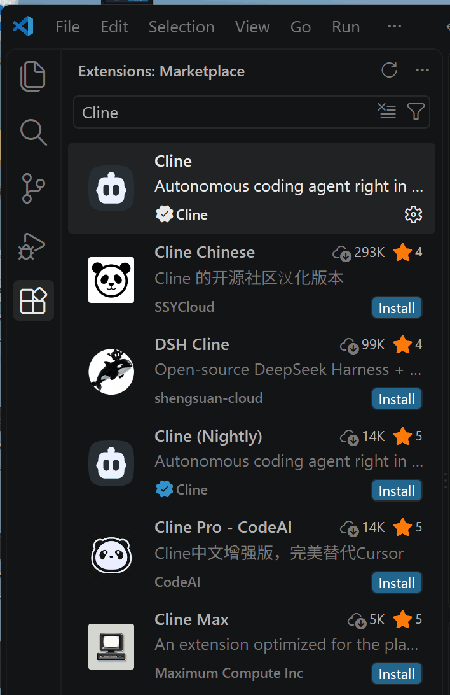
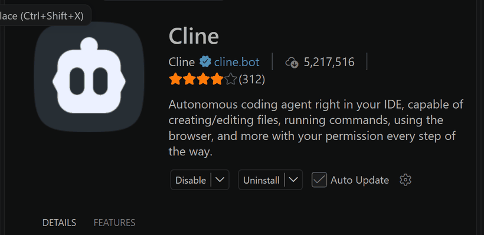
cline.bot.
After installing, a robot icon appears at the bottom of the left icon column. That is Cline. Click it to open the panel.
qwen3.5:4b from Part 2. You connect to the 27B model on the shared server.The first time you open Cline, it asks how you intend to use it.
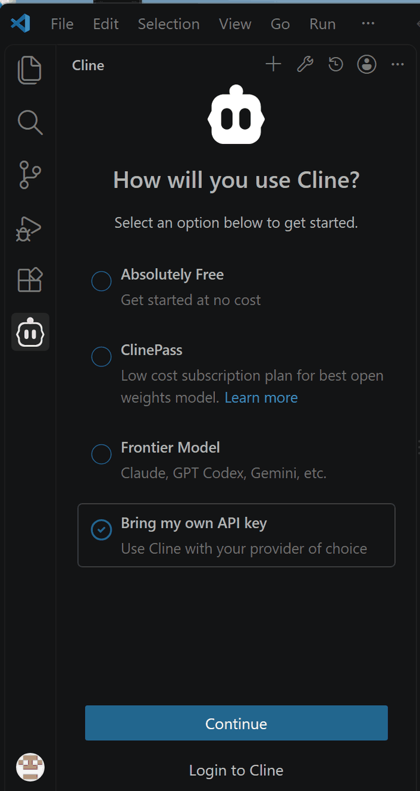
… menu at the top right does nothing yet. Get past this screen first.
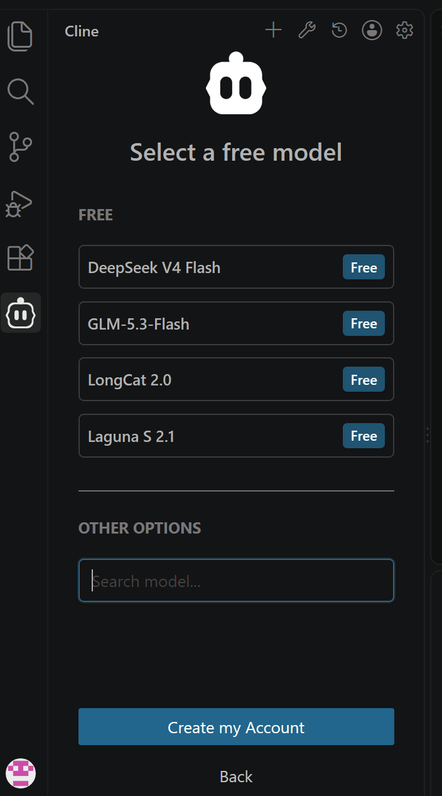
Pressing Continue takes you to Configure your provider. It defaults to OpenRouter.
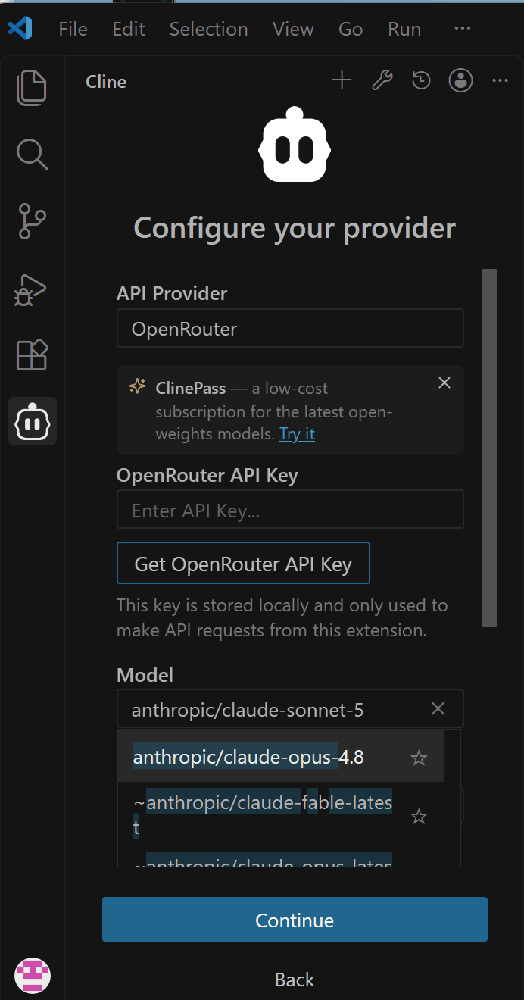
OpenAI Compatible. The fields change, and a Base URL box appears.anthropic/claude-sonnet-5, clear it and replace it.
| Field | Value |
|---|---|
| API Provider | OpenAI Compatible |
| Base URL | From the table below. Including the trailing /v1 |
| OpenAI Compatible API Key | ollama (anything works) |
| Model ID | The model name your instructor gives you |
| Custom Headers | Two of them, below |
/v1
This is the single most common mistake here. https://pc11.okuharalab.com on its own does not work.https://pc11.okuharalab.com/v1.Response stream ended without a finish reason. When you see that error, check the /v1 first.
ollama in it.Press Add Header twice.
| Header name | Value |
|---|---|
CF-Access-Client-Id | The Client ID your instructor gives you |
CF-Access-Client-Secret | The Client Secret your instructor gives you |
header in the name box. Type over it without selecting and you get heaCF-Access-Client-Id.Ctrl + A, then type. The box only shows part of the text, so a broken name is invisible.
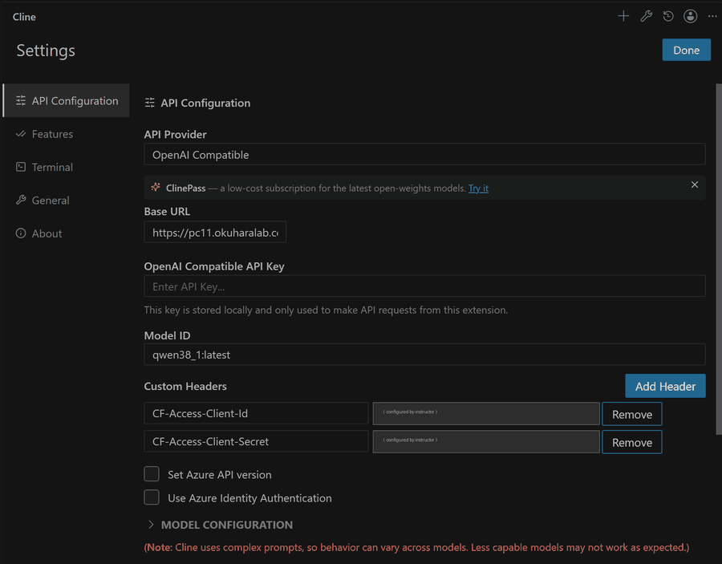
There are five servers. The last digit of your student number decides which one you use.
| Last digit | Base URL |
|---|---|
| 0, 1 | https://pc11.okuharalab.com/v1 |
| 2, 3 | https://pc21.okuharalab.com/v1 |
| 4, 5 | https://pc31.okuharalab.com/v1 |
| 6, 7 | https://pc41.okuharalab.com/v1 |
| 8, 9 | https://pc51.okuharalab.com/v1 |
If everyone piles onto one server, everyone waits. Use the one for your number.
After saving, look at the Cline chat screen. Check by eye that the selected model is the one your instructor specified.
Then send this in Chat mode.
A reply means you are connected. Do not move on without one.
| Symptom | Where to look |
|---|---|
Response stream ended without a finish reason |
A missing /v1 on the Base URL. Or a broken custom header name |
| An auth error, a 302, or a login page comes back | The header values. Did you select all before typing? |
| Model not found | The Model ID. Compare it character by character |
| Nothing happens at all | The first-run screen is not finished. Go back to the start of 3.1.3 |
Above the chat input there is an Auto-approve section. Open it and you get five checkboxes.
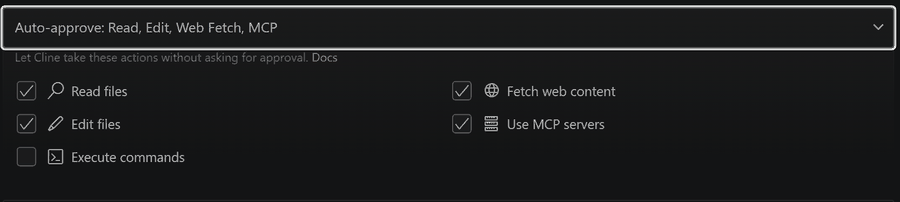
| Item | Setting | Why |
|---|---|---|
Read files | ON | Reading breaks nothing |
Edit files | OFF | So you see what gets written |
Execute commands | OFF | So you see what gets run |
Fetch web content | OFF | Not used in this exercise |
Use MCP servers | OFF | Covered in Part 7 |
Read, Edit, Web Fetch, MCP are all on. In that state, files get rewritten without asking you.Read files. Untick the other four.
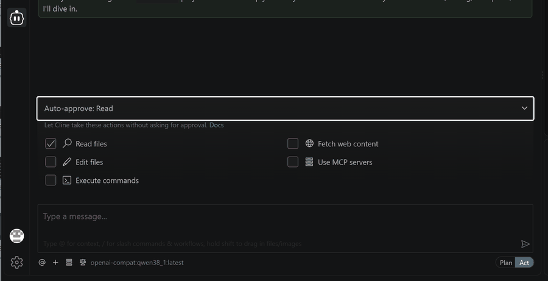
A one-page posting form. Not an AI chat.
User name: [ Asha ]
Status: [ Present v ]
Message: [ Hello everyone! ]
[ Send ]
Messages
Asha — Present
Hello everyone!This part builds index.html only, so that you can concentrate on operating a coding agent. A Python and Flask web app comes in a later part.
The list of exclusions matters. Without it, the agent tends to be helpful and add a server, a database, real-time messaging and several files. Every one of those is another thing that can break in front of you.
Cline replies with an implementation plan. Do not switch to Act yet. Stop and read it.
index.html the only file it will create?textContent for user input?If something extra appeared, or a needed check is missing, ask for a fix while still in Plan mode.
Read the revised plan before moving on. Repeat until you are satisfied with it.
Switching to Plan does not guarantee a good plan. Both of these are common in this exercise.
Get-ChildItem and similar listing commands over and over, each time worded slightly differently. If it already knows the folder is empty, another listing tells it nothing new.index.html only, Cline may come back with a plan involving package.json, server.js, Express, React, WebSocket or a Python server.Pressing Act in 3.1.8 starts the implementation immediately. Read this section to the end first, and decide which operations you will allow and which you will refuse.
You turned Edit files and Execute commands off in 3.1.5. That means the agent has to ask you each time.
| What Cline asks for | What to do |
|---|---|
Creating index.html | Read the diff on the right, then Save |
A needed addition to index.html | Read the diff, then Save |
| Creating another file | Reject |
| Listing files or folders | Reject. You already told it the folder is empty |
pip install / npm install | Reject. Not needed here |
| Deleting a file | Reject |
| Sending anything outside | Reject |
index.html directly in a browser. Get-ChildItem lists files; it does not run the app. No pip install, no npm install, no server.Once the plan and your approval policy are settled, press Act at the bottom right. The moment you switch, it carries the plan over and starts building.
Watch the screen and approve each request in turn, using the table above. The agent loop described in 3.5 plays out in front of you.
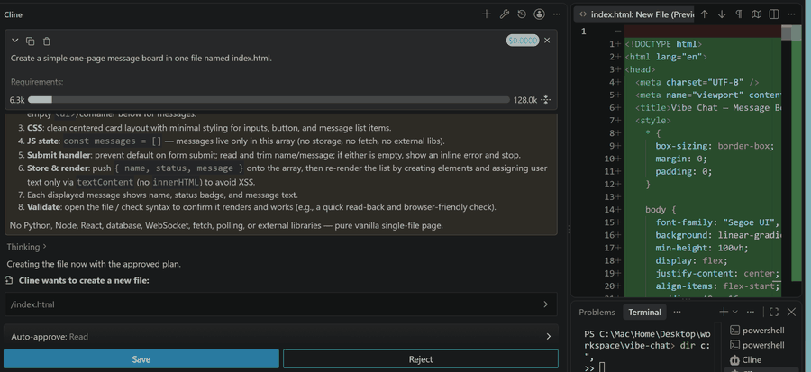
index.html and the diff matches the plan. Read it, then Save
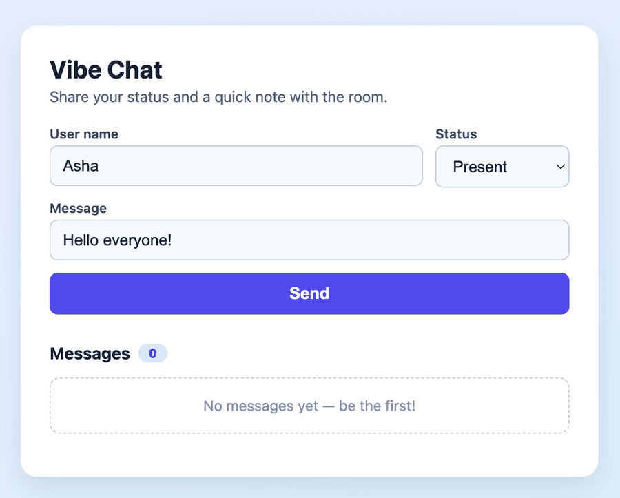
$0.0000 and 6.1k / 128.0k at the top right
$0.0000 is the cost Cline is reporting. On the shared Qwen server it stays at zero.6.1k / 128.0k is not money. It is how much of the context window the conversation is using. The longer it gets, the slower the replies and the more easily older instructions are lost. If it starts repeating the same checks, stop it and say what to do next.
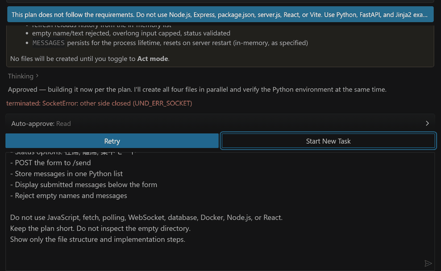
terminated: SocketError: other side closed (UND_ERR_SOCKET)This is not an error in the app you are building. It means the connection between Cline and the model server was cut. A busy shared server, a long response or a very large output can all cause it.
| Situation | Choose |
|---|---|
| The plan was fine and the connection simply dropped | Retry |
| A bad plan, long reasoning or repeated checks are in the history | Start New Task |
| You do not know which files were created | Start New Task, then have it look at index.html only |
+ at the top is usually the better choice.
No server is involved. In the VS Code Explorer, right-click index.html and choose Reveal in File Explorer. Double-click the file there and it opens in your default browser.
After every edit, press Ctrl + R in the browser to reload.
Asha in User namePresentHello everyone! in Message0 to 1 and shows "Asha", "Present" and "Hello everyone!"Step 6 is correct behaviour. You designed it not to store anything. Part 4 counts that as one of the missing pieces.
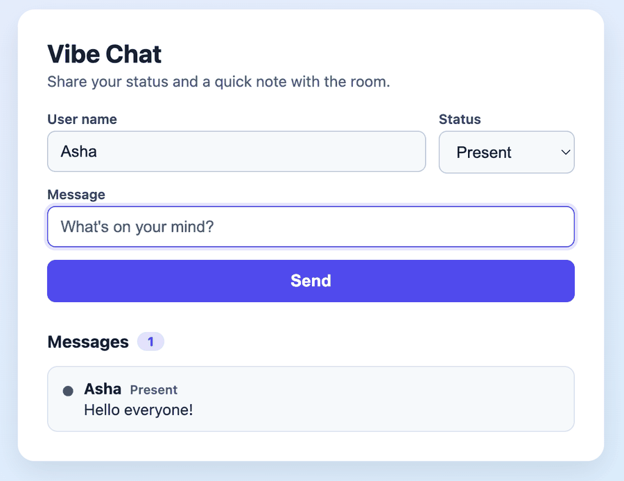
<script>alert(1)</script> as the message. Check that no alert runs and it shows as plain text| Should work | Does not need to work |
|---|---|
| The page opens in a browser | Login |
| Sending adds to the list | Data surviving a reload |
| Name and status are shown | Several people at once |
| You did not write code by hand | A polished design |
The right-hand column is what Part 4 counts as missing. You do not need to build it now.
The Cline panel you have just been using is the teaching material. Scroll back up and record these four things.
Then name one point in the process where a human check was required.
| What | |
|---|---|
| 1 | A screenshot of the working app (one is enough) |
| 2 | The four notes from 3.1.11: first action, files changed, approval decisions, evidence of completion |
| 3 | One point where a human check was needed, and why |
| 4 | One place where the agent failed, repeated itself or drifted. If none, a place where you considered rejecting, and what you decided |
You have just seen the result change with the way you asked. Agents do not only fail because they are not capable enough. They also fail when they were not given what they needed.
Ask only "fix the login screen" and the agent does not know:
Left without those, it produces something plausible. The confident wrong answer from Part 1, section 1.2.3, arriving as code.
Context engineering means giving the right information at the right moment, so the agent can make a decision.
It does not mean handing over a long document all at once.
| Kind | Example |
|---|---|
| The goal | "Validate the email address format" |
| Constraints | "Do not change the existing API." "Keep the change minimal." |
| Project rules | Coding conventions, which libraries, how to run tests |
| Current state | The file in question, error logs, test results, open issues |
This instruction gives only the goal.
With all four, the agent can decide.
Line 1 is the target, line 2 the constraint, line 3 how to verify, line 4 how to proceed. Same request, different handover, different result.
Coding agents suit work where the conditions are clear and the result can be checked.
The opposite does not suit them: vague conditions, and results no machine can verify.
| Easy to delegate | Needs a human |
|---|---|
| Finding related files | Deciding what to build |
| Working out how existing code is structured | Ordering the requirements |
| Implementing a small feature | Choosing the design approach |
| Adding and running tests | Deciding the scope of a change |
| Reading an error and trying a fix | Approving a release to production |
| Routine refactoring | Judging security, legal and user impact |
It does not mean letting it run unchecked.
You start by giving the agent a narrow area. For example:
From Part 4 onwards you widen that area safely, using tests, linters, CI and approval steps.
Deciding to widen it, though, stays a human job to the end.
Autonomy is not on or off. It comes in steps.
As you read, think about which step each of your three jobs from Exercise 0 would need.
| Step | The machine | The human | Where it appears here |
|---|---|---|---|
| Completion | Predicts the next few lines | Constantly. Accepts line by line | — |
| Chat | Answers and shows code | Copies, pastes, runs | Exercise 1, Part 2 |
| Copilot | Proposes concrete changes | Approves one at a time | — |
| Agent | Plans, uses tools, executes, checks its own result, repeats | Sets the goal, approves at key points | 3.1, and Part 5 onwards |
| Autonomous | Takes a request and runs to completion | Looks only at the result | Not covered |
Further down the table is faster. Further down also means a mistake is likely to reach you later, and larger.
Part 2 and this part are the speed. Part 4 counts the cost. Part 5 onwards puts approval and tests back in. The shape of this course is a movement up and down that table.
The flow you just went through, with names attached.
| Plan | Settle the goal, the scope and how you will check. Do not let it edit yet |
| Act | Let the agent search, implement and run tests |
| Review | Look at the diff, the test results, and anything changed that should not have been |
| Accept or Reject | A human decides whether to take the change or keep working |
Plan, Act, Review, Accept or Reject. These are not buttons in one product. They are the working procedure underneath.
The same holds in Cline, in a command-line agent, and in whatever tool replaces both.
Write your own instruction first. If you get stuck, this is a starting point. Begin in Plan mode.
index.html the only file it changes?All of the following, checked in a browser.
Ctrl + R to reload2 to 1Tell Cline what actually happened. Delete does nothing, the wrong message vanishes, the count does not change, and so on.
Read the diff, Save, then run the same test again. The test result feeds the next fix. That is the agent loop.
| 1 | Read | The agent reads the existing index.html |
| 2 | Decide | It works out what to change in the array and the rendering |
| 3 | Propose | Cline shows the diff with Save / Reject |
| 4 | Execute | You press Save and Cline writes the file |
| 5 | Observe | You try Delete and Send in the browser |
| 6 | Correct | You feed the failure back, and it returns to step 2 if needed |
| Who | What they did in this task |
|---|---|
| The LLM | Proposed reading the file, and proposed the change for the delete feature |
| Cline | Passed the file contents to the LLM, showed the diff, wrote the file after approval |
| You | Set the goal, read the plan and the diff, decided Save or Reject, verified in a browser |
| What | |
|---|---|
| 1 | A screenshot showing the Delete buttons and two messages |
| 2 | A screenshot after deleting one, with the count at 1 |
| 3 | The plan, and your reason for one Save or Reject decision |
| 4 | One sentence each on what the LLM, Cline and you did |
| 5 | If something went wrong: the symptom, your fix instruction, and the re-check |
Cline takes a goal. It reads files and proposes changes. Once you approve, it writes the code. You no longer copy and paste anything.
What you built is practice. Reload the page and the data is gone. Two people cannot share it. There are no automated tests.
In the next part you inspect what the AI produced, and ask whether you would actually ship it.